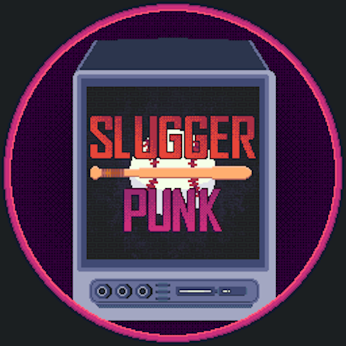

Sluggerpunk

Sluggerpunk is a gripping 2D survivors roguelike adventure. As you navigate through a myriad of challenges, hone your skills and strategies to clash with formidable foes lurking in the underground. Build a versatile arsenal of abilities and gear to enhance your chances to survive, but will you?
Roles & Responsibilities
Initially I was brought on the Sluggerpunk project to design and develop level hazards and obstacles the player would have to avoid. Since this was my first project using the Godot game engine my tasks were small. I quickly became comfortable with GDscript and the engine environment and I took over the UI design and development. I updated the player HUD and created the controls and leaderboard interfaces. As members graduated and left the project my responsibilities grew and I became one of the main programmers during QA, the final push to release and post release maintenance.
Research Summary
One of my biggest accomplishments in the Sluggerpunk project was 100% customizable key bindings for keyboard and controller. Game accessibility can be improved through visual, auditorial and haptic feedback and the physical device the player uses for input. Control customization is one of the most used and sought after accessibility options used today. Ensuring that the games controls were 100% customizable with both keyboard and controller allows for a larger freedom of play and allows for players that would normally not be able to play with the default controls to play.